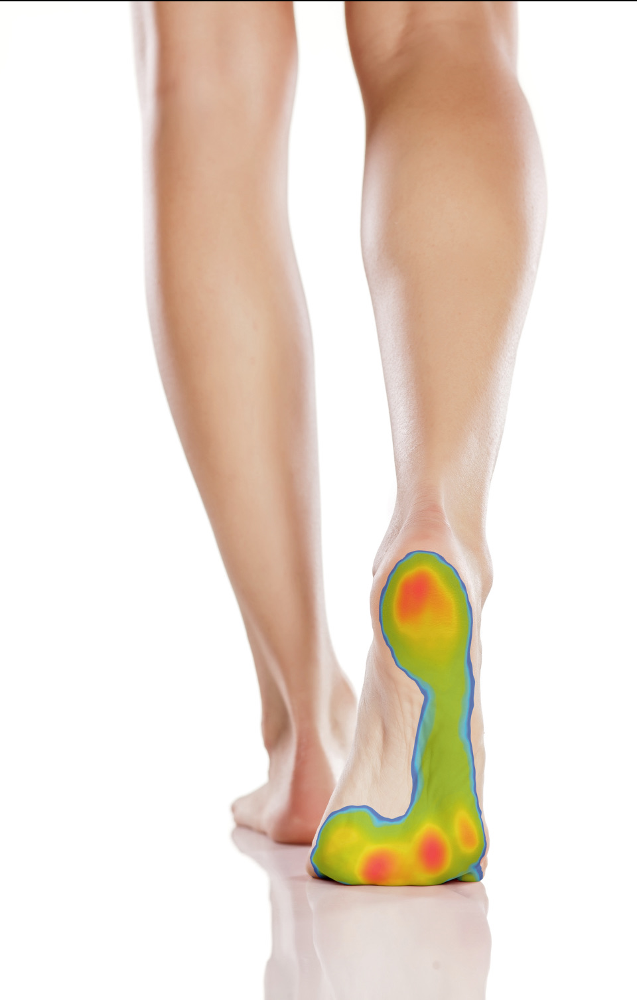

What Actually Happens During a footscan® Assessment
What the sensors measure, how static and dynamic scans differ, and how to read your results.
Read more →From footscan® gait analysis to Phits 3D-printed orthotics and biomechanical assessment, Footscan Centre Ponteland combines clinical expertise with proven scanning technology to keep you moving comfortably.

Every visit starts with understanding how your feet actually move — then we build a plan around it.
High-speed pressure-plate scanning — up to 48,384 sensors at 500 scans/sec — captures how your feet load and move through every phase of your stride. Delivered via Momentum Sports Injury Clinic.
Learn more →Insoles 3D printed from your footscan® data, accurate to 0.1mm and less than half the weight of a traditional orthotic. Delivered via Momentum Sports Injury Clinic.
Learn more →Full lower-limb gait analysis to identify the root cause of knee, hip, back or foot pain linked to how you walk. Delivered via Momentum Sports Injury Clinic.
Learn more →A typical initial assessment takes around 45 minutes, start to finish.
Choose a service and pick a time that suits you — most appointments are available within a week.
We talk through your symptoms, footwear, activity levels and any previous injuries.
Step onto our pressure plate for a static and dynamic scan of how your feet bear weight and move.
We explain your results in plain language and agree a plan — from exercises to custom orthotics.
We're a local, independent clinic — not a national chain. That means longer appointments, consistent practitioners, and results explained in a way that actually makes sense.
"The scan showed exactly why my knee was hurting on long runs. My new insoles have made a huge difference within a few weeks."
"Friendly, thorough, and they actually took the time to explain the results instead of just handing me a printout."
"The biomechanical assessment finally explained why my hip kept flaring up on long shifts. Easy to book and never feels rushed."
Articles on the technology and the science behind it, written by the team.
What the sensors measure, how static and dynamic scans differ, and how to read your results.
Read more →
What 3D printing changes about weight, accuracy, materials and support.
Read more →
How a full lower-limb assessment finds what a foot scan alone can miss.
Book a 3D foot scan at Footscan Centre Ponteland and get a clear, personalised plan for lasting comfort.